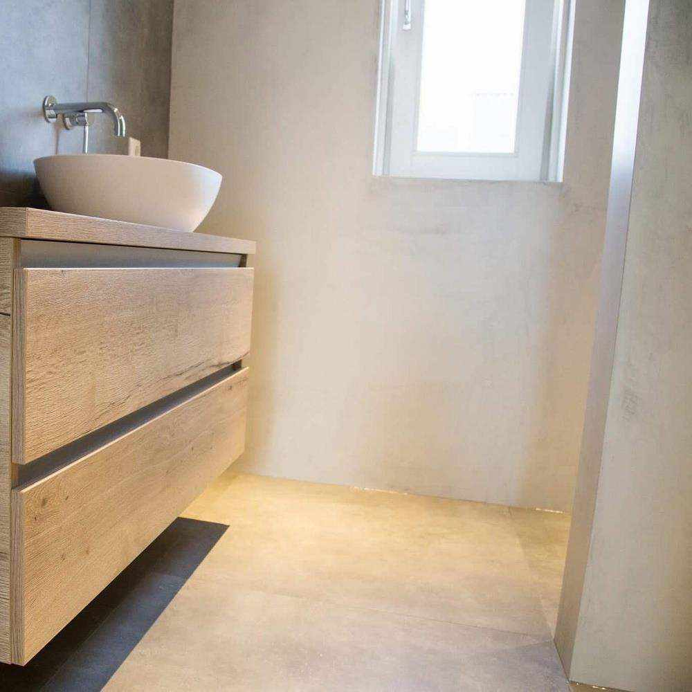
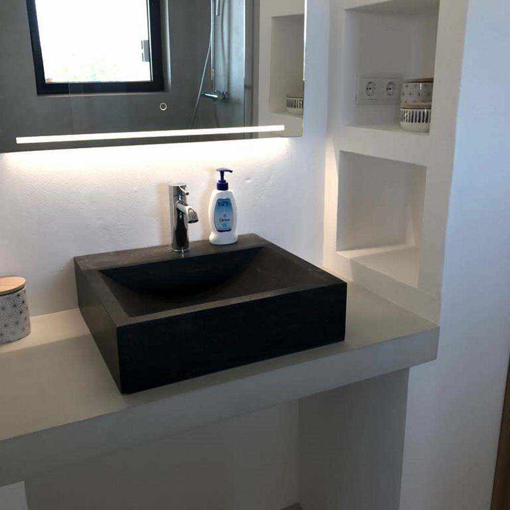
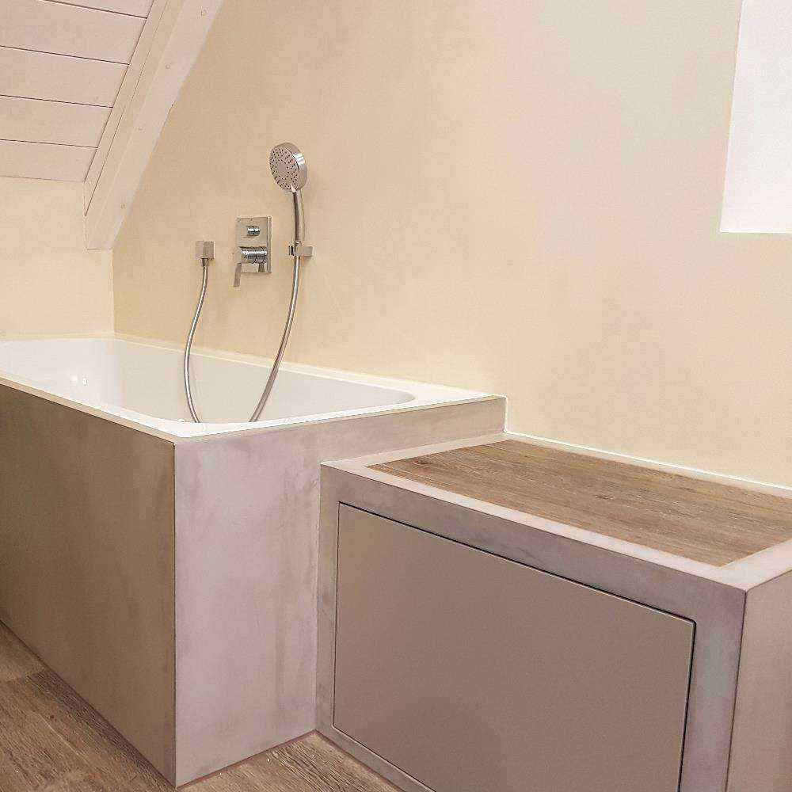
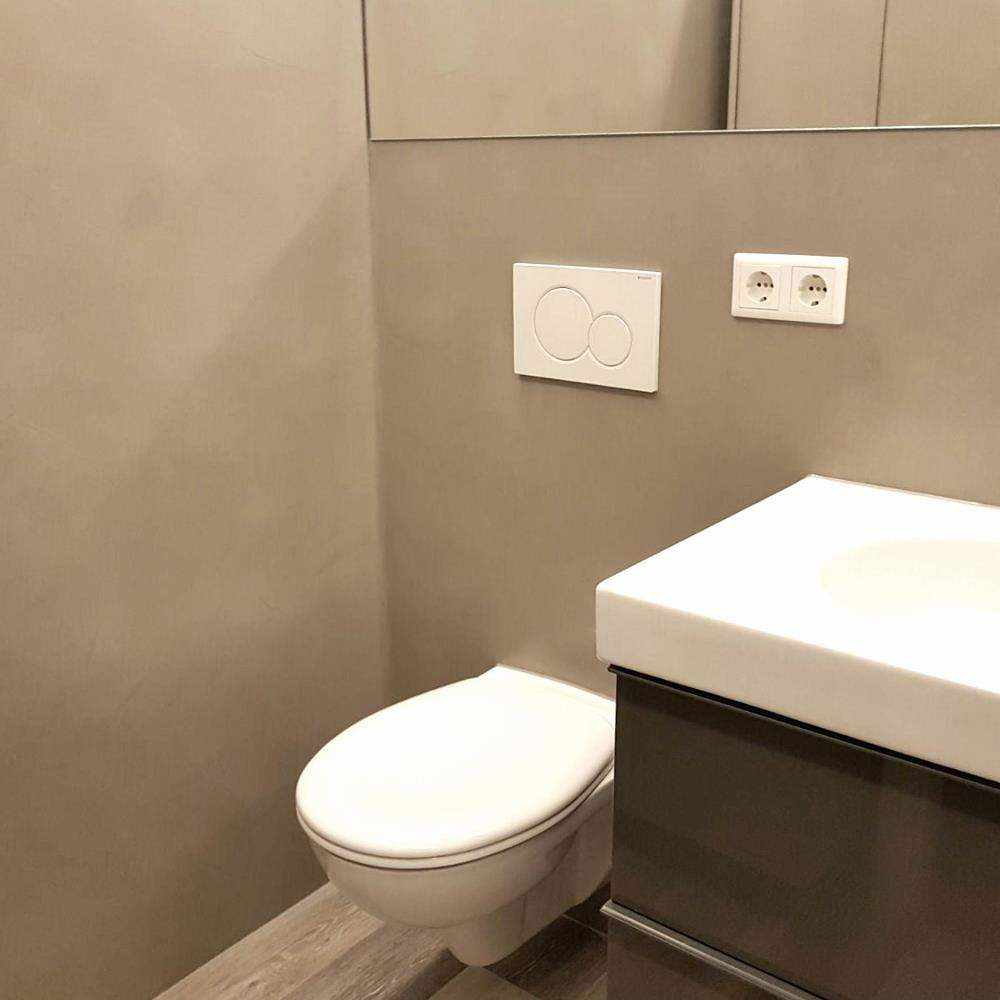
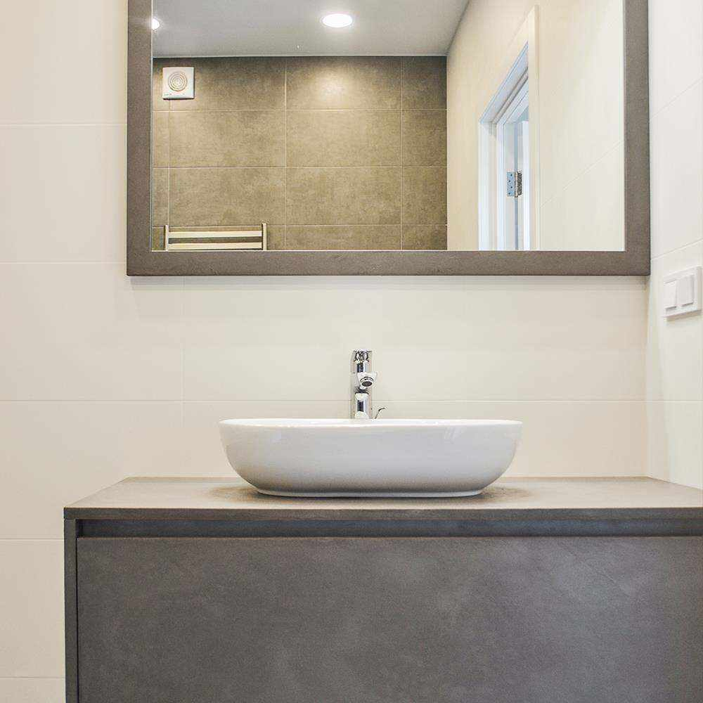

5 clés pour une rénovation réussie des salles de bains
Lieu de détente et de bien-être, la salle de bains doit être aussi facile à vivre que c'est à maintenir. La présence d'eau dans cette pièce signifie que vous ne pouvez pas penser au confort lors de la rénovation, car elle exige des matériaux de qualité qui sont résistant à l'humidité. Que vous souhaitiez repartir de zéro, rénover ou Agrandir votre salle de bain, voici quelques étapes simples pour obtenir un bon résultat.
1. Organiser l'espace
La salle de bains est souvent le plus petit espace de la maison et doit donc être optimisée en taille. La première étape consiste à disposer des mesures et à réfléchir les points lumineux et l'installation de toilettes. Un conseil : pour ne pas pour rendre le passage difficile, il est nécessaire de maintenir une distance de 60 centimètres devant l'évier ou les toilettes, et environ 35 centimètres entre éléments. Il existe des astuces pour faire paraître la salle de bains en micro-ciment plus grande : le la continuité du micro-ciment donne une plus grande sensation d'espace, tout comme l'utilisation de couleurs claires pour le sol et les murs de la salle de bains.

2. sols et murs : résistance et style
Les revêtements des salles de bains doivent satisfaire les goûts décoratifs, mais aussi résister à l'humidité. Le grès cérame, le marbre ou les carreaux de grand format sont quelques-unes des options que nous trouver sur le marché. À cet égard, le microciment remplit les fonctions souhaitées : l'absence de joints empêche l'accumulation de la saleté et facilite ainsi la le nettoyage de la salle de bains. En outre, il peut être parfaitement appliqué sur des et les surfaces verticales, obtenant ainsi une pièce totalement étanche, et aussi sur des douches, des bains ou des lavabos.

3. choisir entre la douche et la baignoire
Lorsqu'il s'agit de choisir en tenant compte de l'environnement, la douche a gagné le sol au-dessus de la baignoire en raison de sa fonctionnalité et de la quantité d'eau trois fois moindre dépenses. Ce n'est pas le cas dans les grandes salles de bains, où vous pouvez opter pour le confort : des baignoires de taille généreuse ou des colonnes d'hydromassage. Si nous sommes hésitants d'espace, à partir de cinq mètres carrés, une baignoire peut être installée sans tout problème.

4. le choix du mobilier
Les articles sanitaires, les meubles et les accessoires sont aussi importants
dans la décoration que
les murs et les sols de la salle de bains. À l'intérieur des lavabos, par
exemple, il y a
sont de nombreuses typologies : sur pied, en retrait, sur le plan de travail,
compact... chacun
dans une multitude de matériaux : pierre naturelle, résine, ciment, porcelaine,
céramique,
verre... Tout dépend de l'environnement dans lequel il sera placé : le
les appareils sanitaires classiques donneront un air romantique, parfait pour le
vintage
de la décoration, tandis que ceux qui sont montés au mur serviront dans les
projets qui
une touche moderne et contemporaine.

5. l'éclairage : trouver un équilibre
Essentielles pour créer une atmosphère détendue, les lumières ne doivent pas être négligées et leur placement doit être bien réfléchi. Il existe de nombreuses alternatives : plafond lampes, appliques, halogène ou autour du miroir. S'il y a de la lumière naturelle, cette salle de bain a un avantage certain sur les autres. La plupart du temps, elle est intéressant d'avoir un focus frontal sur le miroir pour éclairer le visage, alors que dans le reste de la salle, vous pouvez réduire l'intensité et créer une l'atmosphère. Vous pouvez également jouer avec les couleurs : les couleurs claires reflètent et multiplient les la lumière alors que les plus sombres l'absorbent et assombrissent les bains de microciment.
